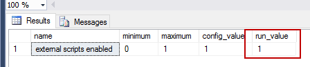
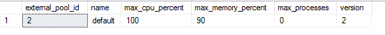

3. SQL RServer¶
Từ SQL 2016, Microsoft hỗ trợ R-server trong database, bao gồm hai cấu phần:
- RServer: Sử dụng bản
Revolution Analyticsđể thực hiệnin database analytics - RService: Hỗ trợ chạy
Rsong song vớiSQLtrong SQLServer
3.1. Cài đặt R Server trong SQL2016¶
- Bước 1: Chạy câu lệnh sau để cho phép chạy external scripts
Exec sp_configure 'external scripts enabled', 1
Reconfigure with override
- Bước 2: Restart SQLServer & SQLServer Launch Pad (SQLServer Configuration Manager)
- Bước 3: Kiểm tra lại để chắc chắn “external scripts enabled” có giá trị bằng 1
Exec sp_configure 'external scripts enabled'

- Bước 4: Cài đặt nâng cao dung lượng RAM tối đa khi sử dụng
--Kiểm tra dung lượng RAM
SELECT *
FROM sys.resource_governor_external_resource_pools
WHERE name = 'default'
--Alter Pool
ALTER RESOURCE POOL "default" WITH (max_memory_percent = 20);
--Điều chỉnh dung lượng RAM
ALTER EXTERNAL RESOURCE POOL "default" WITH (max_memory_percent = 90);
--Kiểm tra lại
ALTER RESOURCE GOVERNOR reconfigure;
Kết quả hiển thị như sau:

3.2. Cài đặt library trong SQL-R Services¶
Cách 1:
- Bước 1: Truy cập vào
#Cài đặt R Services
C:\Program Files\Microsoft SQL Server\MSSQL13.ANHHD\R_SERVICES
#Cài đặt R cho Visual Studio
C:\Program Files\Microsoft SQL\Server\130\R_SERVER\library\base\R
#Cài đặt cho R server 9.0.1 or higher
C:\Program Files\Microsoft\R Server\R_SERVER\library\base\R
Lưu ý: Sử dụng đường dẫn vào R_SERVICES
- Bước 2: Thêm đường dẫn vào library vào file .Rprofile
Cách 2:
- Cài đặt library muốn cài vào 1 thư mục. Ví dụ
.libPaths("D:/sqlrlibrary")
install.packages(c("tidyverse", "arules"))
- Copy toàn bộ library trong thư mục vừa tạo vào library của Rservice
#Cài đặt R Services
C:\Program Files\Microsoft SQL Server\MSSQL13.MSSQLSERVER\R_SERVICES\library
3.3. Cài đặt SQL RServer 9.1¶
Các bước thực hiện:
- Update bản Service Pack Cumulative Update 3 hoặc higher (file SQLServer2016-KB4013105-x64)
- Caì đặt SQL RServer 9.0.1 (foler
en_r_server_901_for_windows_x64_9649035)
- Chạy cmd với quyền Admin
- Thực hiện câu lệnh sau
cd C:\Program Files\Microsoft\R Server\Setup
##Kiểm tra instance
sqlbindr.exe /list
##Bind R với instance vừa tạo
sqlbindr.exe /bind YOUR_INSTANCE
- Cài dặt R SERVER 9.1 (folder en_microsoft_r_server_910_for_windows_x64_10324119)
Tài liệu tham khảo:
3.4. Thực hiện câu lệnh R trong SQL¶
Ví dụ câu lệnh chạy R trong SQL (từ 2016)
DECLARE @RScript NVARCHAR(MAX)
SET @RScript = N'
library(reshape2)
WWWTrans <- InputDataSet
data <- dcast(WWWTrans, CustomerID ~ TransactionTypeID,
value.var = "TransactionAmount",
fun.aggregate = sum)
OutputDataSet <- data.frame(data)'
DECLARE @SQLScript NVARCHAR(MAX)
SET @SQLScript = N'
SELECT CustomerID, TransactionTypeID, TransactionAmount
FROM [WideWorldImportersDW].[Sales].[CustomerTransactions]'
EXECUTE sp_execute_external_script
@language = N'R'
, @script = @RScript
, @input_data_1 = @SQLScript
, @output_data_1_name = N'OutputDataSet'
with result sets ((
ID nvarchar(40),
Var1 int,
Var2 int
));
Lưu ý: Khi đặt set results, cần lưu ý kiểu dữ liệu
##Ghi kết quả của Rscript vào bảng
--Bước 1: Tạo Procedure
create procedure cast_data as
DECLARE @RScript NVARCHAR(MAX)
SET @RScript = N'
library(reshape2)
WWWTrans <- InputDataSet
data <- dcast(WWWTrans, CustomerID ~ TransactionTypeID,
value.var = "TransactionAmount",
fun.aggregate = sum)
OutputDataSet <- data.frame(data)'
DECLARE @SQLScript NVARCHAR(MAX)
SET @SQLScript = N'
SELECT CustomerID, TransactionTypeID, TransactionAmount
FROM [WideWorldImportersDW].[Sales].[CustomerTransactions]'
EXECUTE sp_execute_external_script
@language = N'R'
, @script = @RScript
, @input_data_1 = @SQLScript
, @output_data_1_name = N'OutputDataSet'
with result sets ((
ID nvarchar(40),
Var1 int,
Var2 int
));
--Bước 2: Tạo bảng tạm
create table #a(ID nvarchar(40),
Var1 int,
Var2 int)
select * from #a
--Bước 3: Insert vào bảng
insert into #a(ID, Var1, Var2)
execute cast_data;
3.5. Tạo procedure để chạy Association Rule¶
--Xóa procedure trong hệ thống
drop procedure cross_selling_priori
----------------
--Tạo procedure
create procedure cross_selling_priori @supp nvarchar(30) = NULL, @conf nvarchar(30) = NULL
as
DECLARE @RScript NVARCHAR(MAX)
SET @RScript = N'
library(reshape2)
library(dplyr)
library(arules)
library(stringr)
#Hàm tạo transaction convert
transaction.convert <- function(data, type = c("wide","long")){
type <- match.arg(type)
library(dplyr)
library(reshape2)
library(arules)
if (type == "wide"){
names(data)[1]="ID"
data[data==0] <- NA
data.product.melt <- melt(data, id.vars = "ID") %>% na.omit %>% select(-3) %>% distinct()
write.table(data.product.melt, file = "transaction.txt", sep = ",", col.names = FALSE,
row.names = FALSE)
transaction <- read.transactions("transaction.txt", format = "single", cols=c(1,2), sep = ",", encoding = "Unicode")
fn <- "transaction.txt"
if(file.exists(fn)) file.remove(fn)
}
else{
data.product.melt <- data %>% select(c(1,2)) %>% distinct()
write.table(data.product.melt, file = "transaction.txt", sep = ",", col.names = FALSE,
row.names = FALSE)
transaction <- read.transactions("transaction.txt", format = "single", cols=c(1,2), sep = ",", encoding = "Unicode")
fn <- "transaction.txt"
if(file.exists(fn)) file.remove(fn)
}
return(transaction)
}
#List customer
list.cus <- function(rules, data){
#Create data frame from rules
df2 <- rules %>% as("data.frame")
data.frame(do.call("rbind",
strsplit(as.character(df2$rules),"=>",fixed=TRUE)),
support = df2$support, confidence = df2$confidence,
lift = df2$lift) -> df3
names(df3) <- c("lhs", "rhs", "support", "confidence", "lift")
df3$rule <- paste("rule_", seq(1,dim(df3)[1]), sep="")
# Turn data frame to filter condition -------------------------------------
lhs.trans <- function(a){
a <- gsub("{", "", a, fixed = T);
a <- gsub("}", " != 0 & ", a, fixed = T);
a <- gsub(",", " != 0 & ", a, fixed = T);
return(a)
}
rhs.trans <- function(a){
a <- gsub("{", "", a, fixed = T);
a <- gsub("}", " == 0", a, fixed = T);
return(a)
}
data.frame(
lhs = sapply(df3$lhs, lhs.trans),
rhs = sapply(df3$rhs, rhs.trans)
) -> df4
df4$condition <- paste0(df4$lhs, df4$rhs)
df4 <- data.frame(df4, rule = df3$rule);
#Mapping data frame
data3 <- data.frame()
for (i in seq(1, dim(df4)[1])){
data2 <- data %>% filter_(df4$condition[i]) %>%
mutate(rule = df4$rule[i])
data3 <- rbind(data3,data2)
}
data3 %>% select(CIF, rule) -> df5
left_join(df5, df3, by = "rule") -> df6;
#Keep distinct rules
df6 %>% group_by(CIF) %>% arrange(desc(lift)) %>%
distinct(CIF, .keep_all = T) -> result
return(result)
}
####Import data
data <- InputDataSet
data[is.na(data)] <- 0
data$CUSTOMER_NAME <- data$CUSTOMER_NAME %>% as.character
Transaction <- data %>% select(-CUSTOMER_NAME) %>% transaction.convert()
a <- ' + @supp +
'
b <- ' + @conf +
'
rhs.new <- Transaction@itemInfo$labels
# Get all results for all products ----------------------------------------
result <- data.frame()
for (i in rhs.new) {
tryCatch({
rules <- apriori(
Transaction,
parameter = list(
supp = a,
conf = b ,
minlen = 2
),
appearance = list(default = "lhs", rhs = i)
)
subset.matrix <- is.subset(rules, rules)
subset.matrix[lower.tri(subset.matrix, diag = T)] <- NA
redundant <- colSums(subset.matrix, na.rm = T) >= 1
rules.pruned <- rules[!redundant]
subrules2 <- sort(rules.pruned, by = "lift")
my_result <- list.cus(subrules2, data) %>% as.data.frame
result <- rbind(result, my_result)
}, error = function(e) {
})
}
OutputDataSet <- data.frame(result)'
DECLARE @SQLScript NVARCHAR(MAX)
SET @SQLScript = N'
SELECT *
FROM VPBANK.dbo.Product_holding'
EXECUTE sp_execute_external_script
@language = N'R'
, @script = @RScript
, @input_data_1 = @SQLScript
, @output_data_1_name = N'OutputDataSet'
with result sets ((
CIF nvarchar(40),
rules nvarchar(40),
lhs nvarchar(40),
rhs nvarchar(40),
support float,
confidence float,
lift float
))
GO
-- Chạy procedure
cross_selling_priori @supp = 0.005, @conf = 0.26
3.6. Kết nối với SQLRServer¶
#Bước 1: Tạo connection
connStr <- "Driver=SQL Server;
Server=HON-BICC-PC0035;
Database=DBS_BI;
Uid=sa;
Pwd=123"
sqlShareDir <- "C:/Users/anhhd3/Desktop/SQLRserver test"
sqlWait <- TRUE
sqlConsoleOutput <- FALSE
sqlShareDir
cc <- RxInSqlServer(connectionString = connStr,
shareDir = sqlShareDir,
wait = sqlWait,
consoleOutput = sqlConsoleOutput)
rxSetComputeContext(cc)
sampleDataQuery <- "select NO_TRANS, TXN_AMT from EBANKING_TRANS_CIF"
inDataSource <- RxSqlServerData(sqlQuery = sampleDataQuery,
connectionString = connStr,
rowsPerRead=500)
# colClasses = c(INTERNAL_AMOUNT = "numeric", ONLINE_LIMIT_DATE = "numeric",
# COLLATERAL_CODE = "factor"))
rxGetVarInfo(data = inDataSource)
system.time(rxSummary(~TXN_AMT^2, data = inDataSource))
rxHistogram(~TXN_AMT, data = inDataSource, title = "Fare Amount Histogram")
3.7. Data thực hiện case study¶
3.8. Tài liệu tham khảo¶
- Pertell.com
- TomaszTSQL
- Microsof SQL 2016
- Data Science with Microsoft SQL Server 2016
- Microsoft support